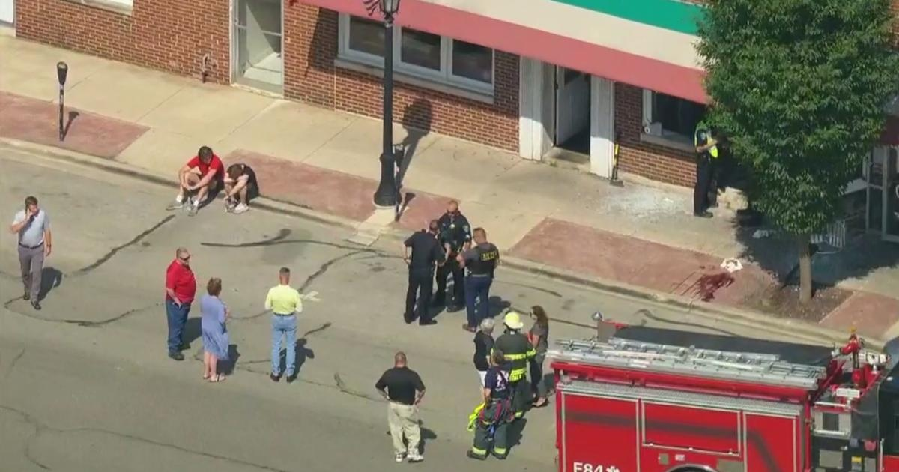

Car slams into Hinsdale sub shopHINSDALE, Ill. (CBS) -- Five people were injured when a car plowed into a sub shop in Hinsdale Monday afternoon. The accident happened just after 2:30 p.m. at Fontano's Subs and Deli, at 9 S. Lincoln St. in the western suburb. A 14-year-old pedestrian was hit and was left in critical condition. Three customers at the sub shop who were either struck by the car or debris were also hospitalized in serious condition. A fourth customer was treated and released at the scene. Police say the driver wasn't hurt - and they are investigating what caused the crash and if charges could be filed. for more features. |
 |